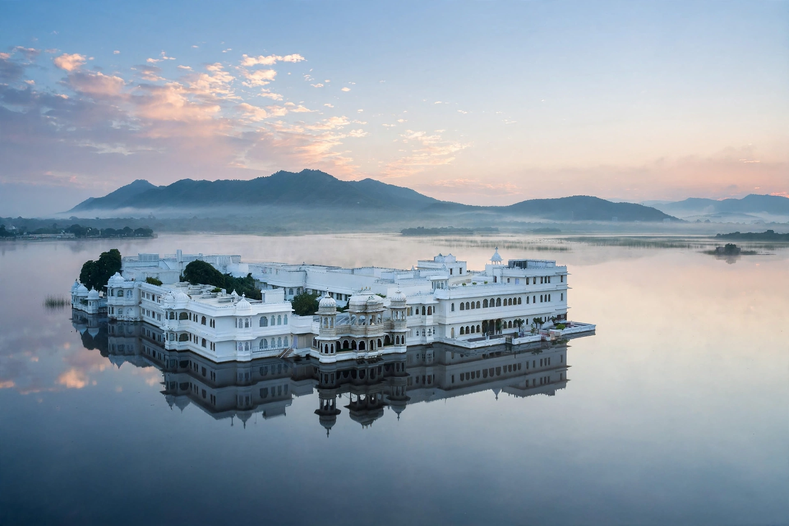

| Lake Pichola | |
|---|---|
 | |
| Location | Udaipur, Rajasthan, India |
| Type | Artificial freshwater lake |
| Built | 1362 AD; enlarged by Maharana Udai Singh II |
| Length | 4 km (2.5 mi) |
| Width | 3 km (1.9 mi) |
| Max. depth | 8.5 m (28 ft) |
Lake Pichola, situated in Udaipur city in the Indian state of Rajasthan, is an artificial fresh water lake, created in the year 1362, named after the nearby Picholi village. It is one of the several contiguous lakes developed over the last few centuries in and around Udaipur, the "City of Lakes".
The lake is said to have been built by a Banjara tribesman who dammed a stream to ease the transport of grain. Maharana Udai Singh II, impressed by its setting against the Aravalli hills, founded the city of Udaipur on its banks and enlarged the lake by constructing a masonry dam (the Badipol). The lake's islands carry famous palace buildings: Jag Niwas, the Lake Palace, built by Maharana Jagat Singh II in the 1740s and now a luxury hotel; and Jag Mandir, the island palace where Prince Khurram, the future Mughal emperor Shah Jahan, took refuge in 1623–24 — said to have inspired features of the Taj Mahal.
On the eastern shore stands Udaipur's own City Palace-rival, the Udaipur City Palace complex, the largest palace complex in Rajasthan (not to be confused with the City Palace of Jaipur). Other islands include Mohan Mandir and Arsi Vilas, a bird sanctuary. Boat rides on the lake, especially at sunset, are Udaipur's signature tourist experience; the lake also appeared in the James Bond film Octopussy. Lake levels fluctuate with the monsoon, and in severe drought years large parts of the lakebed have dried.